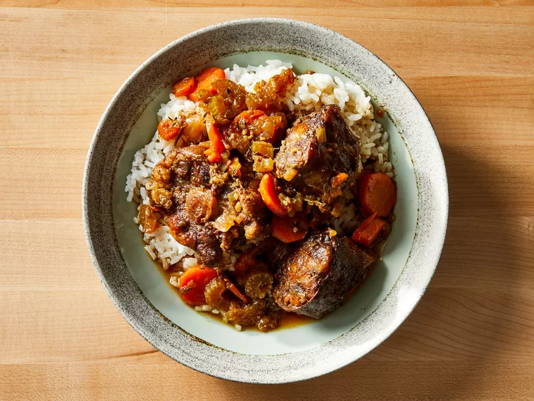

What Is Jamaican Oxtail?
Jamaican Oxtail is one of the greatest dishes
ever made. The definition of great tasting comfort
food, Jamaican Oxtail will take your taste buds on
a joyride while simultaneously making you want to
take a four-hour nap after eating it
Ingredients
- 2 1/2 pounds oxtail
- 1 tablespoon soy sauce
- 1 tablespoon Worcestershire sauce
- 1 tablespoon salt
- 1 tablespoon white sugar
- 1 tablespoon garlic and herb seasoning
(such as Spike)
- 1 teaspoon browning sauce
(such as Grace)
- 1/4 teaspoon ground paprika
- 1/4 teaspoon ground cayenne pepper
- 1/4 teaspoon ground black pepper
- 2 tablespoons vegetable oil
- 2 carrots, thinly sliced
- 2 stalks celery, thinly sliced
- 1 onion, chopped
- 4 garlic cloves, minced
- 3 cups low-sodium beef broth
- 1 bunch fresh thyme
- 1 sprig fresh rosemary
- 1 bay leaf
- 2 tablespoons unsalted butter
Directions
- Place oxtail in a shallow dish.
Combine soy sauce, Worcestershire sauce,
salt, sugar, garlic and herb seasoning,
browning sauce, paprika, cayenne pepper,
and black pepper together in a small bowl.
Rub both sides of oxtail with soy sauce
mixture; discard any excess.
- Heat vegetable oil in a large, deep
skillet over medium-high heat. Sear oxtail
in hot oil until golden brown, about 3
minutes per side; transfer to a plate and
set aside.
- Sauté carrots, celery, onion, and garlic
in the same skillet until softened, about
5 minutes. Add beef broth, thyme, rosemary,
and bay leaf; bring to a boil. Add oxtail,
with its juices, and butter. Reduce heat to
low, cover, and simmer until oxtail is fork
tender, about 3 hours.
- Uncover skillet and increase heat to
high. Cook, stirring occasionally, until
sauce reduces and thickens, about
5 minutes.